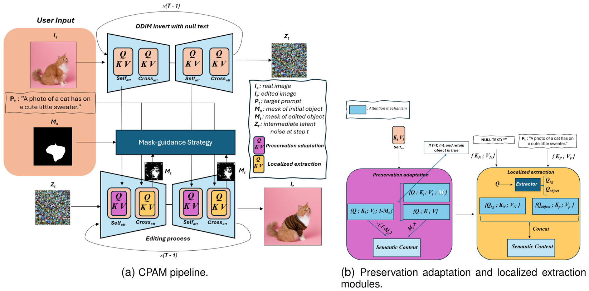
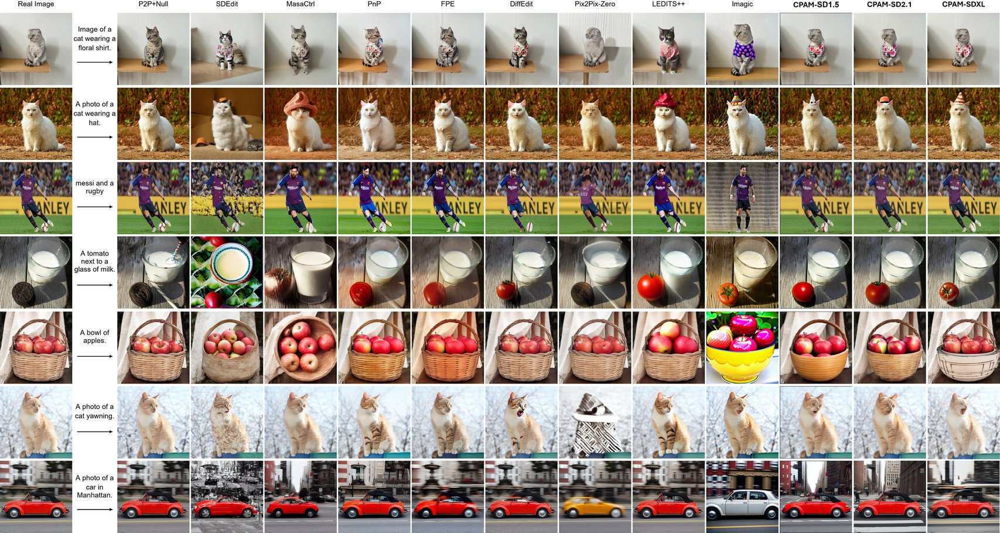

Editing natural images using textual descriptions in text-to-image diffusion models remains a significant challenge, particularly in achieving consistent generation and handling complex, non-rigid objects. Existing methods often struggle to preserve textures and identity, require extensive fine-tuning, and exhibit limitations in editing specific spatial regions or objects while retaining background details. This paper proposes Context-Preserving Adaptive Manipulation (CPAM), a novel zero-shot framework for complicated, non-rigid real image editing. Specifically, we propose a preservation adaptation module that adjusts self-attention mechanisms to preserve and independently control the object and background effectively.
This ensures that the objects' shapes, textures, and identities are maintained while keeping the background undistorted during the editing process using the mask guidance technique. Additionally, we develop a localized extraction module to mitigate the interference with the non-desired modified regions during conditioning in cross-attention mechanisms. We also introduce various mask-guidance strategies to facilitate diverse image manipulation tasks in a simple manner. CPAM can be seamlessly integrated with multiple diffusion backbones, including SD1.5, SD2.1, and SDXL, demonstrating strong generalization across different model architectures.
Extensive experiments on our newly constructed Image Manipulation BenchmArk (IMBA), a robust benchmark dataset specifically designed for real image editing, demonstrate that our proposed method is the preferred choice among human raters, outperforming existing state-of-the-art editing techniques. The source code and data will be publicly released at the project page: https://vdkhoi20.github.io/CPAM.
CPAM edits a real image using a source object mask and a target text prompt, without fine-tuning Stable Diffusion. The mask can be derived in various ways, such as manual drawing, click-based extraction, or text prompts using SAM.
A preservation adaptation module adjusts self-attention so that the original object and background are retained during editing. A localized extraction module prevents the target prompt from changing regions that should not be modified, and mask-guidance strategies cover diverse image manipulation tasks.

| Method | CLIP ↑ | LPIPS ↓ | DS ↓ | RMSE ↓ |
|---|---|---|---|---|
| SDEdit [30] | 28.19 | 0.386 | 0.239 | 57.16 |
| MasaCtrl [32] | 28.82 | 0.246 | 0.121 | 32.51 |
| PnP [11] | 29.03 | 0.238 | 0.075 | 24.36 |
| FPE [33] | 29.02 | 0.201 | 0.056 | 22.06 |
| DiffEdit [36] | 28.58 | 0.182 | 0.080 | 35.81 |
| Pix2Pix-Zero [12] | 27.01 | 0.229 | 0.117 | 31.30 |
| LEDITS++ [31] | 28.74 | 0.210 | 0.104 | 43.30 |
| Imagic [37] (FT) | 30.34 | 0.462 | 0.286 | 81.55 |
| CPAM-SD1.5 (Ours) | 29.26 | 0.180 | 0.072 | 23.42 |
| CPAM-SD2.1 (Ours) | 29.08 | 0.125 | 0.044 | 19.13 |
| CPAM-SDXL (Ours) | 29.77 | 0.118 | 0.044 | 18.90 |
CPAM-SDXL obtains the best background preservation, with LPIPS of 0.118 and RMSE of 18.90, while keeping a competitive CLIPScore of 29.77. CPAM-SD2.1 reaches the same best DreamSim score (0.044) and the second-best RMSE. Imagic, the fine-tuning method, has the highest CLIPScore (30.34) but the weakest background preservation.
Qualitative comparison with state-of-the-art methods across multiple real image editing tasks, with CPAM shown on different diffusion backbones.

@misc{vocpam,
author = {Vo, Dinh-Khoi and Do, Thanh-Toan and Nguyen, Tam V. and Tran, Minh-Triet and Le, Trung-Nghia},
title = {CPAM: Context-Preserving Adaptive Manipulation for Zero-Shot Real Image Editing},
}